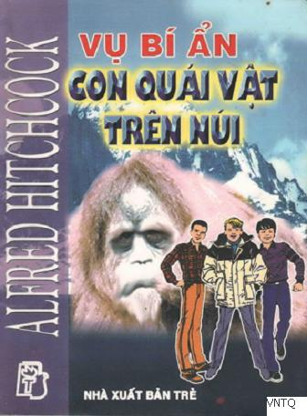

Thưa các bạn độc giả, thật là buồn cười khi giới thiệu những nhân vật mà các bạn đã gặp rồi. Vậy những bạn nào đã quen biết Ba Thám Tử Trẻ có thể khỏi đọc lời mở đầu. Mời các bạn này giở ngay sang chương một.
Ngược lại, nếu các bạn chưa bao giờ nghe nói đến Peter Crench, Bob Andy và “thủ lĩnh” của hai cậu này là Hannibal Jones, thì nên có thêm thông tin về bộ ba này một chút trước khi bắt đầu.
Hannibal Jones là linh hồn của bộ ba. Đó là một cậu bé có hình dáng tròn trịa và được tạo hóa phú cho một đầu óc thiên tài. Trí thông minh và trí tưởng tượng nhạy bén của Hannibal không đi kèm với tính khiêm tốn, nhưng Hannibal vẫn rất dễ mến. Tuy nhiên “thám tử trưởng”, như Hannibal tự xưng, không được mọi người ưa thích. Một số người cho rằng cậu là một kẻ quấy rối.
Phụ tá của Hannibal là Peter Crentch, “thám tử phó”, là một chàng trai lực lưỡng, có tính thận trọng bẩm sinh và thường trốn tránh nguy hiểm... mà sự nguy hiểm này lại thu hút Hannibal.
Thành viên thứ ba là Bob Andy. Bob có tính tình trầm tĩnh và siêng năng, làm việc bán thời gian ở thư viện, nhờ vậy Bob cung cấp vô số thông tin khi điều tra. Nên Bob thường được gọi là “Lưu trữ Nghiên cứu”.
Ba bạn sống tại Rocky, một thành phố nhỏ ven Thái Bình Dương, không xa Hollywood lắm. Peter và Bob sống cùng ba mẹ. Còn Hannibal, mồ côi từ nhỏ, ở với chú thím, và phụ quản lý cửa hàng bán đồ cổ của chú thím, nổi tiếng khắp vùng.
Đôi khi Hannibal phải bỏ bê việc học hành một chút, khi bị thu hút bởi một vụ đặc biệt hấp dẫn... giống như câu chuyện dấu chân khổng lồ trên tuyết mà các bạn sẽ sắp đọc.
Một người khổng lồ... hay một cái gì đó khác đáng sợ hơn?
Dù gì, Hannibal cũng kiên quyết tìm ra sự thật.
Alfred Hitchcock